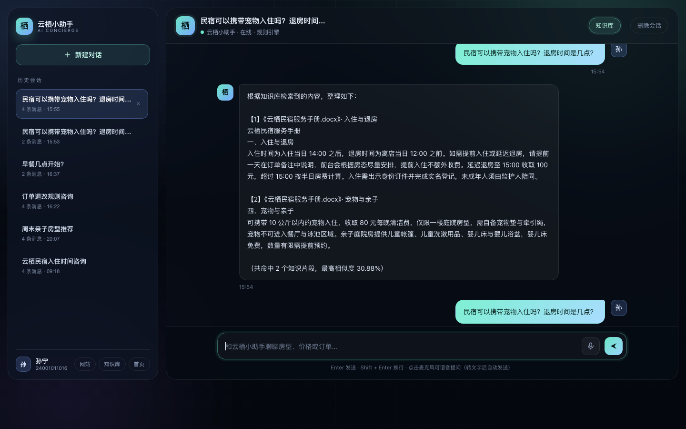

主要功能
- 新建 / 切换 / 删除会话，左侧历史会话列表实时刷新
- 发送消息后返回带知识库引用编号的回答（如 [1] 云栖民宿服务手册.docx）并标注相似度
- 语音提问：浏览器语音识别把口述文字填入输入框后发送
- Enter 发送、Shift+Enter 换行、清空会话与状态提示
民宿场景的会话式问答页面：左侧多会话管理，右侧聊天窗口；回答会引用知识库文档片段并标注相似度，支持语音提问把口述转成文字后发送，回复由本地规则引擎模拟生成。

GET /api/chat/sessionsPOST /api/chat/sessions
GET /api/chat/sessions/:id/messagesDELETE /api/chat/sessions/:id
POST /api/chat/messagesGET /api/health
cd backend && node app.js → http://localhost:8016/sun_chat.html
注意：该页面依赖本地 Node 后端与 MySQL；在 GitHub Pages 静态托管上打开会出现「接口请求失败」，因此新版首页只链接本说明页。